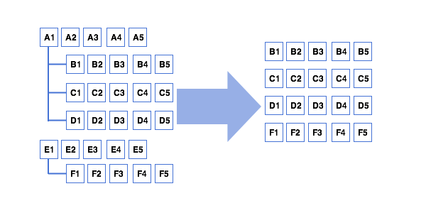

When you work intensively with data in your application then soon or not but you will realize that the best way of keeping them is some model object inherits from QAbstractItemModel, then data are hidden inside implementation of model. Adding, removing and modification are accessible through your API of the model class and it calls for appropriate model modifications (like beginInsertRows/endInsertRows). If you implement it in the way, then it is ideal for developer to use it in vews, operate with datas, implementing undo (see previous post: Undo in complex Qt projects).
It is often situation when all application data are some kind of hierarchical tree of objects and properties. So, all of them can be kept in just one tree-like model class, but I see that developers do not use the approach and it happens because they do not see how some selective piece of data can be shown or have expectations of implementing own view classes, which is not trivial though and you may spent too much efforts there. Instead a lot of code related to synchronization between models can appear and it leads to complication of logic.
Same time, it can be resolved by implementation proxy models and use just standard view classes from Qt which are very effective. And I would like to show here that it is really simple:
There is simple example that I had to implement recently. The application shows list of objects, and same time it should show list of all properties of all objects. My first impression was to implement two separate models that may have shared data or base data are kept in one of model + some synchronization. But I saw that data manipulations leads to code complication + undo should be implemented smoothly.
We can implement just one model which is tree of objects (two levels). In one view (we can use QListView to show only first level of tree) we show listed objects. But what about another view to list of all objects of second level – we can implement proxy model which will be model of view

Let’s have a look at QAbstractProxyModel. For mapping we need the implementation of mapFromSource() and mapToSource() plus rowCount / columnCount() / parent() and index().
Because destination model is table-like, parent() returns just QModelIndex(), columnCount() returns count of source model, and index() returns just createIndex(row, column).
More complex are rowCount(), mapFromSource() and mapToSource() because they need to calculate. (see a listings below)
Another piece of logic – appropriate behavior on adding /removing rows and data changes. QAbstractItemModel has very convenient signals reporting process of adding rows or columns. With recalculating indexes we can just call same methods of proxy models, like:
...
connect(source, SIGNAL(rowsAboutToBeInserted(QModelIndex, int, int)),
this, SLOT(s_rowsAboutToBeInserted(QModelIndex, int, int)));
connect(source, SIGNAL(rowsInserted(QModelIndex, int, int)),
this, SLOT(s_rowsInserted(QModelIndex, int, int)));
...
void Proxy::s_rowsAboutToBeInserted(QModelIndex p, int from, int to)
{
if (!p.isValid())
return;
int f = ... // calculate
int t = ... // calculate
beginInsertRows(QModelIndex(), f, t);
}
void Proxy::s_rowsInserted(QModelIndex p, int, int)
{
// post adding routines if needed
endInsertRows();
}
So, to summarize: it is not much efforts to implement proxy model which do appropriate data mappings in both directions. As benefit you have data kept in one place, all necessary signals by model to report changes in data (model). By mapping / proxying / filtering you can visualize in view any piece of data, even from different levels of hierarchy, etc. To visualize you can use just standard Qt view which are very effective.
Full listings of my proxy model: